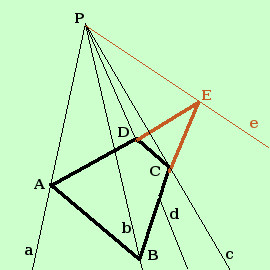
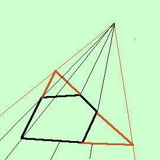

|
Mostriamo come puoi trasformare un angoloide facendolo diventare un triedro e facendo in modo che si conservi la disuguaglianza che dice che una faccia e' minore della somma della altre: mostriamolo prima per un angoloide a 4 facce:  Considera l'angoloide Pabcd trasformiamolo in triedro mantenendo la disuguaglianza che la faccia Pab e' minore di tutte le altre facce: Prolungo i lati BC ed AD che si incontreranno in E Poiche' Pced e' un triedro avro' che la faccia Pcd e' minore della somma delle facce Ped e Pce e quindi se prima avevo Pab < Pac + Pdb + Pcd ora avro' Pab < Pac + Pdb + Ped + Pce cioe' Pab < Pae + Pbe come volevamo Domanda: Se il poligono di base e' un rettangolo come posso fare il triedro? Risposta  Di seguito una figura per come trasformare un angoloide a 5 facce in un triedro |